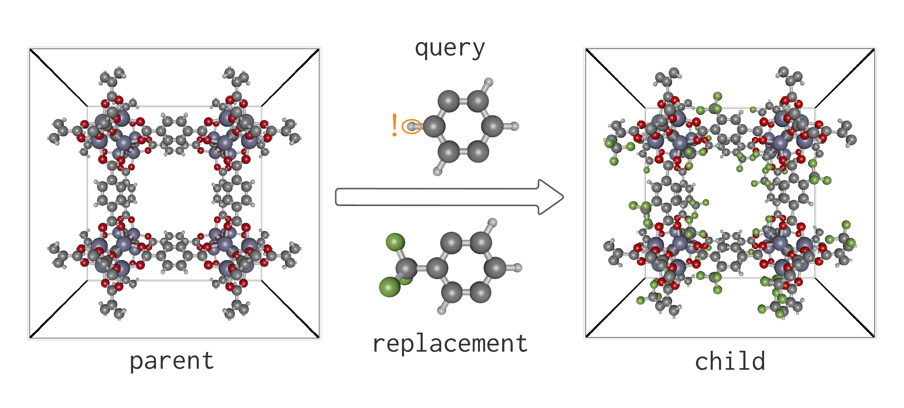
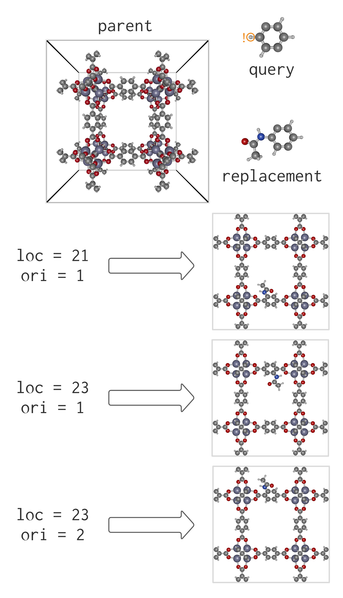

Find/Replace Operations

To do a find-and-replace, we perform a search using a query with masked atoms, denoted by appending their chemical species label with ! (see above). Masking an atom allows its species to change or for it to be deleted during the replacement.
Inputs
To guide replacement, the .xyz file input for the search moiety must be altered. Simply adding ! after the atomic symbol tags that atom for replacement. The atom property viewer feature in iRASPA is conducive to this task.
In the example of finding and replacing the 2 position H of the p-phenylene moieties of IRMOF-1, the input should have one H atom tagged, like so:
H! 1.06706 0.70670 1.48683Load the new file in like before and execute the search. The ! tag does not affect the outcome of substructure_search.
query = moiety("2-!-p-phenylene.xyz")
search = query in parentTo replace p-phenylene moieties with 2-acetylamido-p-phenylene moieties, load 2-acetylamido-p-phenylene.xyz:
replacement = moiety("2-acetylamido-p-phenylene.xyz")Simple Syntax
Generally, it is advisable to perform the search and use substructure_replace, as multiple replacement tasks can be performed with a single searching step. The search is usually the slowest step, and it is desirable not to perform it repeatedly. However, for one-shot find-and-replace operations, the standard replace function syntax may be used:
child = replace(parent, query => replacement)To direct the number, location, and orientation of the replacements made, use the keyword arguments for substructure_replace. Location loc and orientation ori specify a particular isomorphism to use when setting up the replacement operation.

For more details, see the search docs and the replacement modes example.
Documentation of functions
PoreMatMod.substructure_replace — Functionsubstructure_replace(search, replacement, nb_loc=2)
Inserts replacement into a parent structure according to search and kwargs. Provide a replacement style kwarg to direct the location and orientation of replacements. Default behavior is to seek the replacement operation with lowest RMSD on spatial alignment. Returns a new Crystal with the specified modifications (returns search.parent if no replacements are made)
Arguments
search::SearchtheSearchfor a substructure moiety in the parent crystalreplacement::Crystalthe moiety to use for replacement of the searched substructurerandom::Boolsettrueto select random replacement orientationsnb_loc::Intassign a value to select random replacement atnb_locrandom locationsloc::Array{Int}assign value(s) to select specific locations for replacement. Iforiis not specified, replacement orientation is random.ori::Array{Int}assign value(s) whenlocis assigned to specify exact configurations for replacement.0values mean the configuration at that location should be selected for optimal alignment with the parent.name::Stringassign to give the generatedCrystala name ("new_xtal" by default)verbose::Boolsettrueto print console messages about the replacement(s) being performed